本站图片地址后期将采用图床样式，可以调用， 采集的同时，不需要把图片下载到本地，图片也有专用CDN。
本站采集插件已经可以适配海洋CMS，支持M3U8在线播放和下载资源的采集，快速更新，稳定播放！
请按以下步骤进行：依次点击
【采集】-【资源库管理】
，然后依次输入
资源库名称：
155资源
155资源网 https://155api.com/api.php/Seacms/vod/at/xml/
155m3u8资源 https://155api.com/api.php/Seacms/vod/from/155m3u8/at/xml/
备用155资源网 https://www.155api.com/api.php/Seacms/vod/at/xml/
点击
【增加】
按钮即可，具体操作如下图
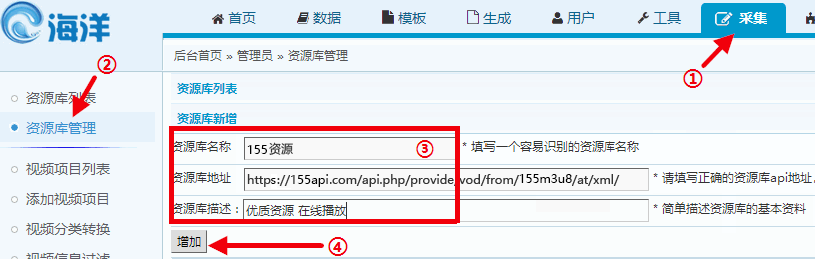
或在您的快捷菜单中添加本站采集插件已经可以适配苹果CMS，支持M3U8在线播放和下载资源的采集，快速更新，稳定播放！
苹果8.x在您的快捷菜单中添加下面内容
155资源网,?m=collect-list-ac2--hour--xt-1-ct--group--flag-155zy-apiurl-https://155api.com/api.php/provide/vod/at/xml/
155m3u8资源,?m=collect-list-ac2--hour--xt-1-ct--group--flag-155zy-apiurl-https://155api.com/api.php/provide/vod/from/155m3u8/at/xml/
备用155资源网,?m=collect-list-ac2--hour--xt-1-ct--group--flag-155zy-apiurl-https://www.155api.com/api.php/provide/vod/at/xml/
收到很多会员朋友反馈说采集提示404，文件路径：
admin_maccj.php
后分析代码发现是因为网址参数丢失导致
请手动修改浏览器的网址，在
admin/
后面加上
index.php?m=admin-index
即可正常采集
有的会员朋友采集资源后，状态或者下载地址虽然提示了成功并没有更新成功,可检查下是否勾选了下图中的选项
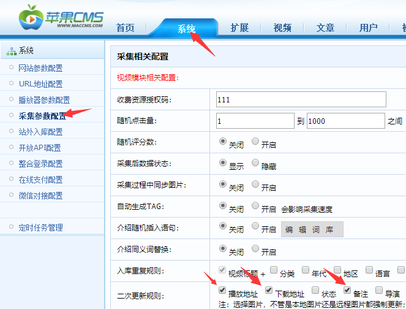
有的会员朋友采集资源后，播放片源没有自动选择对应的数据，这种情况通常是因为没有添加对应的播放器导致！
需要先再网站后台添加对应的播放器，才可以实现播放，以155m3u8的资源为例
【点击下载播放器文件】
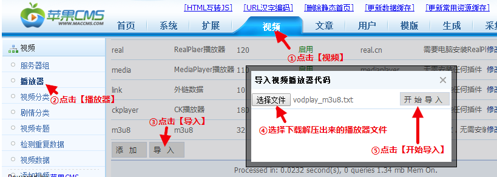
本站采集插件已经可以适配苹果CMSV10，支持M3U8在线播放和云播，快速更新，稳定播放！
本站可用api信息如下
155资源网 https://155api.com/api.php/provide/vod/at/xml/
155m3u8资源 https://155api.com/api.php/provide/vod/from/155m3u8/at/xml/
备用155资源网 https://www.155api.com/api.php/provide/vod/at/xml/
添加方法如下(不要填写附加参数)
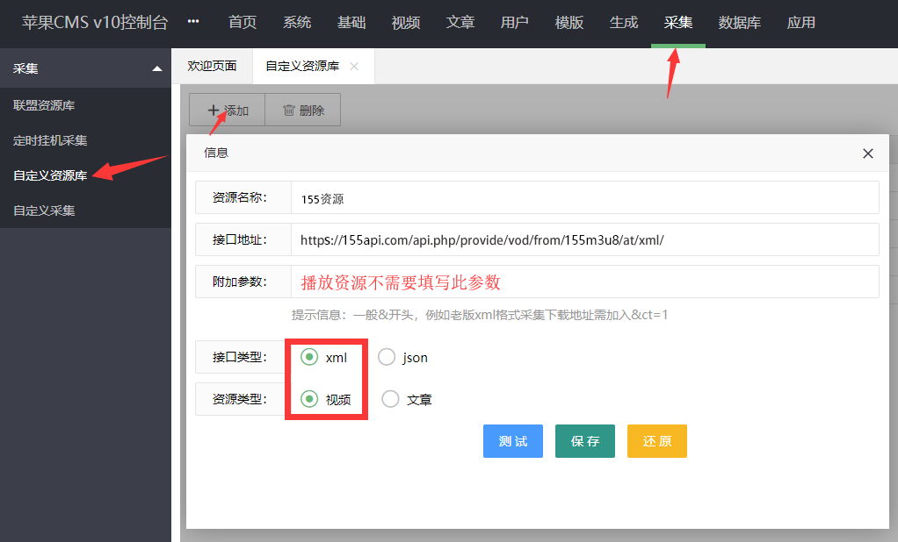
有的会员朋友采集资源后，播放片源没有自动选择对应的数据，这种情况通常是因为没有添加对应的播放器导致！
需要先再网站后台添加对应的播放器，才可以实现播放。下载文件解压后按下图操作
【下载播放器文件】
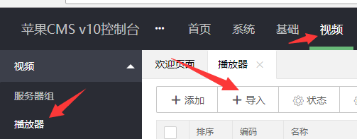
本站采集插件已经可以适配飞飞影视系统PHP版(PPVOD)最新版4.2，支持M3U8在线播放资源的采集，快速更新，稳定播放！
请按以下步骤进行：依次点击
【采集】-【添加资源库】
，然后依次输入
资源库名称：
155资源
155资源网 https://155api.com/api.php/Feifei/vod/at/xml/
155m3u8资源 htts://155api.com/api.php/Feifei/vod/from/155m3u8/at/xml/
备用155资源网 https://www.155api.com/api.php/Feifei/vod/at/xml/
点击
【提交】
按钮即可，具体操作如下图
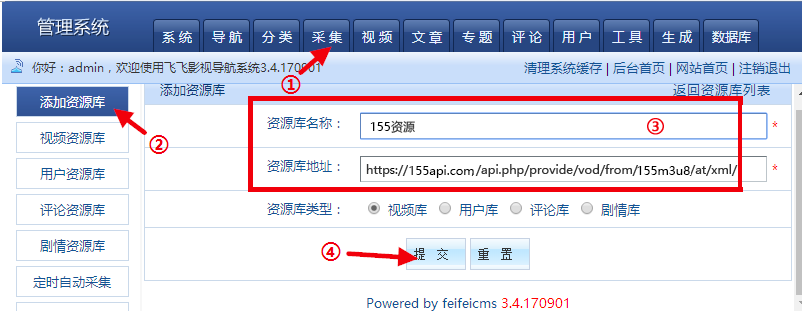
请按以下步骤进行：依次点击
【视频】-【播放器设置】
，然后在【添加播放器来源】依次输入
播放器名称：
155资源
播放器标志：
155m3u8
点击
【保存按钮】
按钮即可，具体操作如下图
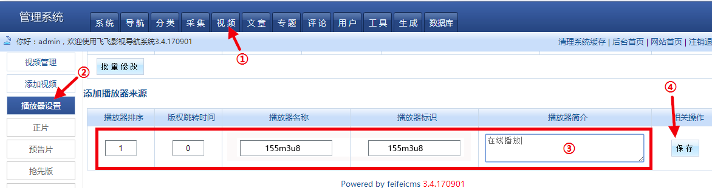
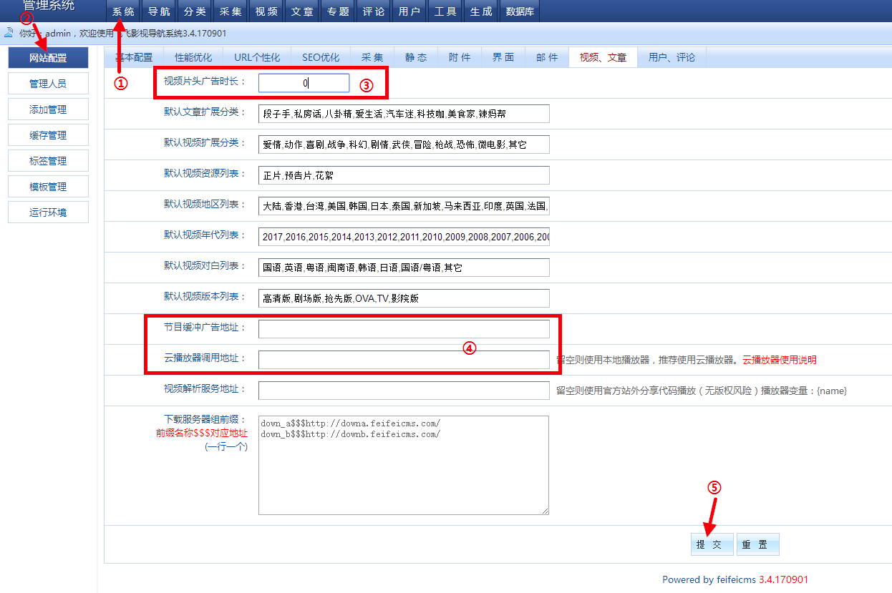
本站采集插件已经可以适配飞飞影视系统PHP版(PPVOD)完美版，支持M3U8在线播放和下载资源的采集，快速更新，稳定播放！
依次点选【采集管理】>【一键采集视频】 如下图
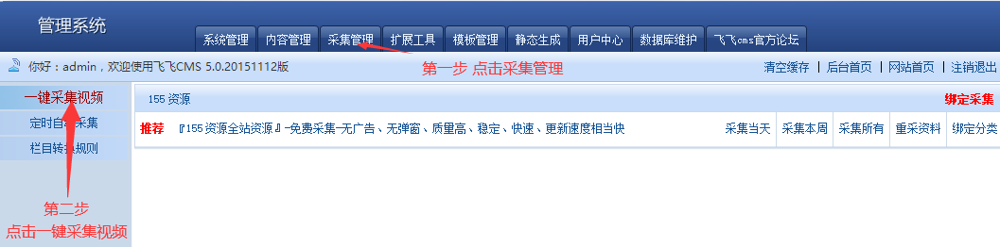
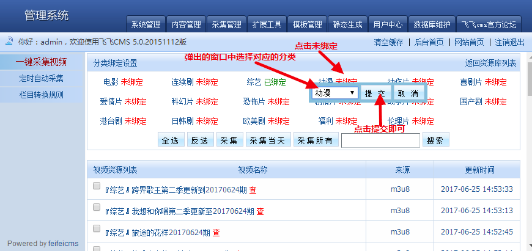
修改
Lib/Conf/config.php
,在列表最后添加：
'155m3u8'=> array('36','155m3u8'),
其中36修改成你实际的顺序，按照上一个播放器的id增加就可以。
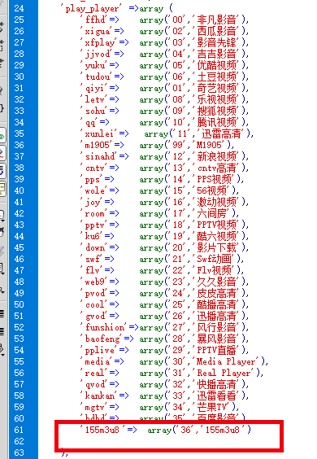
本站采集插件已经可以适配MaxCms4.0，支持M3U8在线播放和下载资源的采集，快速更新，稳定播放！
如下图这样先添加采集快捷菜单
155资源,admin_155zy.asp
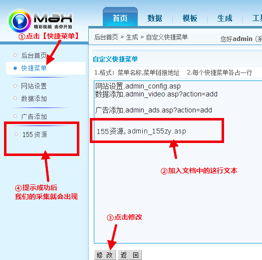
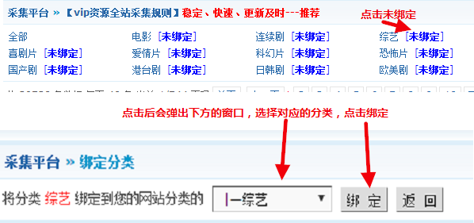
第一个，修改
admin\imgs\main.js
,在列表最后添加：
if(str.indexOf('155m3u8')>-1) return "155m3u8"
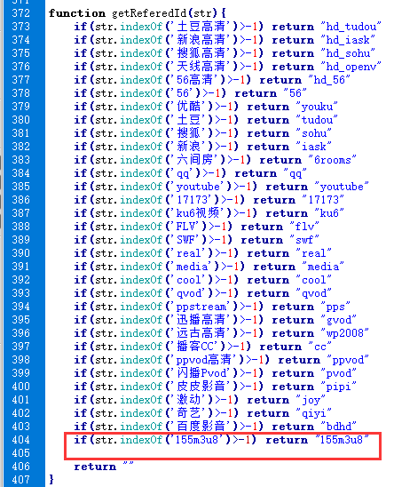
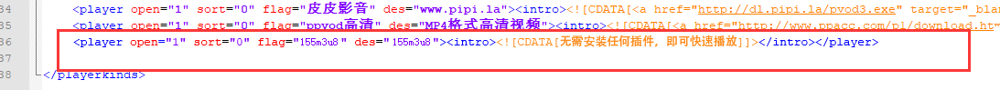
本站采集插件已经可以适配赞片CMS V8，支持M3U8在线播放和云播，快速更新，稳定播放！
请按照下图打开采集添加界面
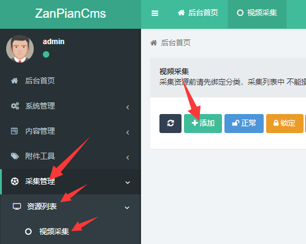
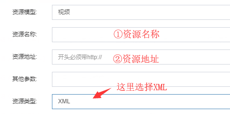
有的会员朋友采集资源后，播放片源没有自动选择对应的数据，这种情况通常是因为没有添加对应的播放器导致！
需要先再网站后台添加对应的播放器，才可以实现播放,具体操作流程如下
先打开播放器添加窗口,操作方式如下图
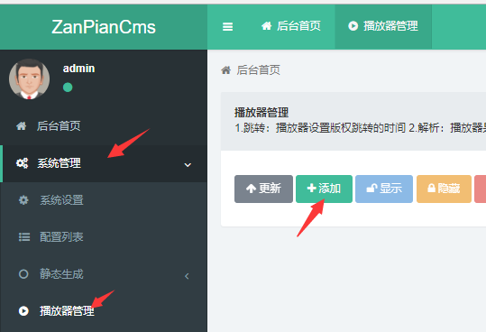
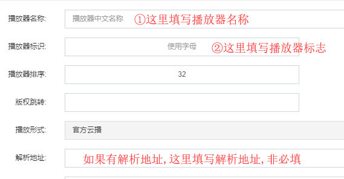
155文章资源 https://155api.com/api.php/provide/art/at/json/
文章列表地址：https://155api.com/api.php/provide/art/?ac=list
文章详情地址：https://155api.com/api.php/provide/art/?ac=detail
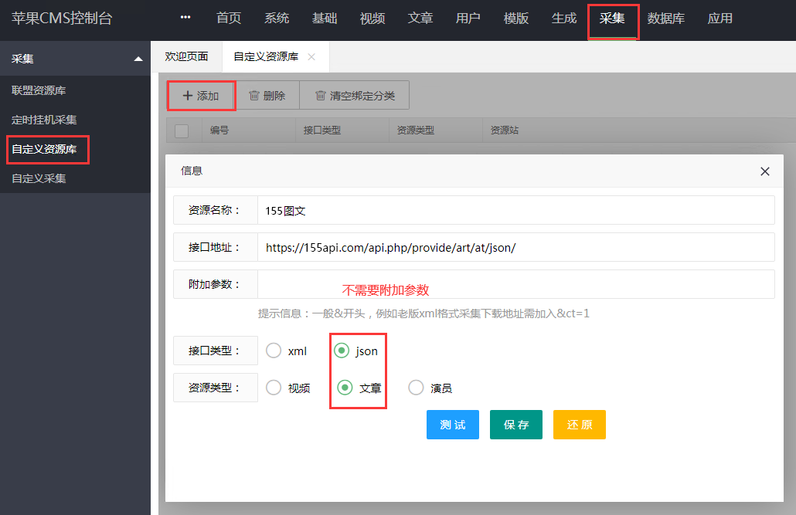
155资源网：https://155api.com/api.php/provide/vod/at/json/
视频列表地址：https://155api.com/api.php/provide/vod/at/json/?ac=list
视频详情地址：https://155api.com/api.php/provide/vod/at/json/?ac=detail
DP播放解析接口：https://www.155jx.com/?url=